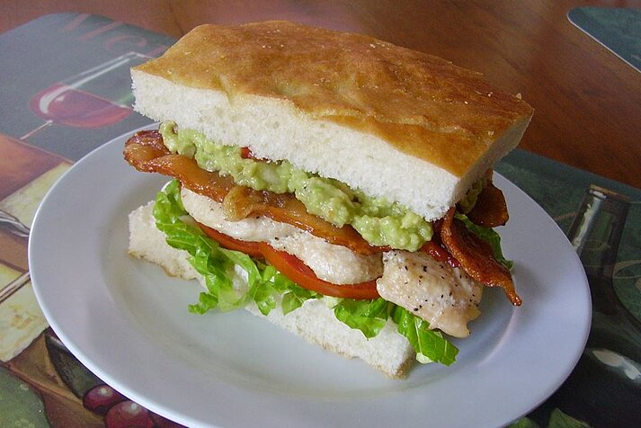

Pig Burger!

This is a unique burger, invented in Australia. The burger consists of: Grilled chicken fillet, grilled bacon, lettuce and tomato on a toasted foccacia bun, with herbed mayo on the base and guacamole on the crown. The burger got its name due to the strange range of ingredients. They taste fantastic, however you may need a few napkins to clean up afterwards, depending on the amount of guacamole.
Ingredients
- 2 slices focaccia bread
- 1 tablespoon herb mayonnaise
- ⅛ cup shredded lettuce
- 2 slices ripe tomato
- ¼ pound grilled chicken breast
- 3 slices bacon
- 2 tablespoons guacamole
- Place bacon in a large, deep skillet. Cook over medium high heat until evenly brown. Drain, crumble and set aside.
- Toast focaccia. Spread mayonnaise on one side of one slice, then top with lettuce, tomato, chicken, bacon and guacamole. Top with second slice of focaccia.